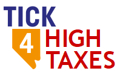
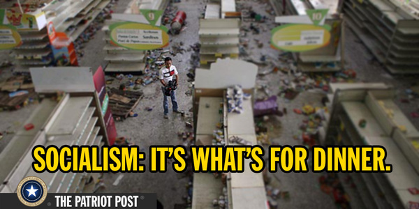

|  |
Tax Hike Tick Segerblom is a disaster for Las Vegas, Clark County, Nevada, and the Country. |
You may have thought a Tick was simply a blood sucking parasite. Well, it turns out they also run for political office!
So, who is Tick Segerblom?
Keep in mind, Tick's suck your life blood for THEIR betterment and YOUR detriment. Here is Tax Hike Tick's plan to suck YOU dry:
And, what is it Tick intends to do with these tax increases???
Fund the schools!!
Sound familiar??
Why is he proposing higher taxes to fund schools when the legalizatio of marijuana was supposed to do this?
What is going to happen when, as with the marijuana promise, these new tax revenues don't end up going to the schools? As the old saying goes, 'when you only know how to use a hammer everything looks like a nail.' Based on history the answer is clear: Tick will propose even more taxes!
Here's a better idea
Many of us came to Nevada to escape the type of fiscal insanity advocated by people like Tax Hike Tick. Los Angeles, San Francisco, and Seattle are perfect examples of now unlivable cities run by the Ticks of the world. Los Angeles, for example, has nearly a 10% sales tax, nearly a 15% income tax, the highest gas tax in the nation (and rising), $13.25/hour minimum wage (going to $14.25/hour next year), and sanctuary city status. What has this given Los Angeles: homeless encampments, defecation and disease in the streets, sky high rents, out of sight home costs, loss of small businesses, a shrinking middle class, high crime rates, an ineffective police force, and an enormous property tax burden.
|  | ||
Our beautiful city and the fruits of Free Market Capitalism. |
Los Angeles: On the Road to Socialism and why so many of us escaped to Las Vegas. |
Venezuela: Tick's Dream Come True. Equality among the citizens with Everyone having nothing. The high life for the Tick's who run the country as they have EVERYTHING. |
A perfect example is Roberto's Taco Shop - one of the most widespread, famous, and profitable small businesses in the Southwest. With 60 locations in Nevada and Southern California, guess where you won't find a single Roberto's? LOS ANGELES! Imagine, a taco shop that won't step foot in a city filled with millions of it's proven clientele. The last thing we need is to vote in people who will create another Los Angeles or San Francisco here in our beautiful city. Today people flock TO Las Vegas (from places like Los Angeles) to escape this type of insanity. Electing Tax Hike Tick will cause people to flock FROM Las Vegas. With that exodus will go businesses, jobs, a middle class, a tax base, and the value of everything you own.
Tick, stay in the State Senate and fix your marijuana mess. If you are going to affect any tax changes, LOWER THEM!
Tick has already shown he can not be trusted to keep his promises. All the marijuana money was supposed to fund our schools and that didn't happen. Why should we reward this by voting the perpetrator into another elected position? Here's an odd concept for you, Tick. Spend your time in government trying to find ways to spend LESS, not tax more. If you can't do that then take up some other occupation.
We do NOT NEED "TAX HIKE" TICK.
As a side note I would like everyone to consider that civilizations and societies don't fall due to an invading external force. This may be how it appears on the surface, but ultimately, civilizations fall due to the pernicious rot caused by the incremental financial and life controlling edicts of an all powerful government. We are like the frog in the pot of water that doesn't notice its 'goose is cooked' until it's too late. A 1% increase here, a small uptick in the minimum wage there, adding a few thousand non citizens to the welfare rolls, a nanny state which each year tries to right one more perceived wrong in your life. It all seems like very little to give up at the time, but add these incremental changes over the years and you end up with the $20+ Trillion national debt we currently have amassed (if you count the promises the government has made for pensions and retirement health care it's closer to a $200 Trillion debt!)
It's human nature to take the easiest path and to succomb to an emotional plea. Voting for people like Tick allows us all to feel better in the short term. Who wants to be painted as someone against giving money to schools? Who wants to live with the whining and moaning from those who feel denied by us saying 'no' to another government handout? It's easier just to vote for a Tick then to say 'NO' and have to deal with the short term temper tantrums from the Left. Is Tick going to be the singular “straw that breaks our society's back”? Probably not. But, his policies could be enough to break Las Vegas's back. People are leaving California in droves because of the Tick-like policies enacted over the last few years. It doesn't take much to make a city or county unaffordable or undesirable. We have a thriving growing city right now. Why should we risk that so people like Tick and his supporters can go to dinner parties and brag about how much they care about the 'little guy'. All the while their policies are destroying those very people whom they claim to care about (as well as the rest of us). So, we need to be vigilant and make the smart choices: those which are in our best long term interests. Our children and grandchildren will thank us. After all, for example, what is the point of funding schools if it comes at the cost of graduates having no prospects for success or a decent life? We can very easily stop the heat from being ticked up a notch or two on our collective “pan of water”: DO NOT VOTE FOR TAX HIKE TICK. Let him work out school funding through the means he already promised. If we had no other choice that would be one thing, but we do have an excellent alternative: TRISH MARSH. And, even if Trish is not your 'cup of tea' you can still help the cause by NOT VOTING at all for county commissioner. While I've never advocated that one not vote, in this case it is a reasonable alternative to send a message that we are against ruining our great city with a proven disaster: Socialism.
** As to "Tax Hike" Tick's assurance he is a 'True Democrat', I'm not sure in what world Tick lives. A True Democrat would fall within the mold of a John F. Kennedy, a Senator Sam Nunn, a Harry S. Truman, or a Sen Daniel Patrick Moynihan. These were men who were pro Free Market Capitalism, strong on defense, ardent defenders of The Constitution, and showed some semblance of fiscal constraint (JFK called for LOWERING the tax rate shortly before he was murdered). Tick pushes for NONE of these long standing and admirable core principles of the Democrat Party; Tick is really a TRUE RADICAL LEFTIST. On his facebook page Tick advocates for Socialism and teaches that the WW2 generation was the worst generation we've ever seen. That post has since been deleted but here is a link to a picture of it, TICK THE SOCIALIST Twenty years ago Tick would be unrecognizable to the Democrat Party. Those days are now gone having been replaced by the rabid hard core Leftist/Socialists who wish to transform this country into a Venezuela. Sadly, such is the state of the Democrat Party today. If you are like me you've probably realized that it isn't we who have left the Democrat Party but the Democrat Party which has left US. But nonetheless, don't be fooled by the cheap slogan plastered on Tick's signs and placards: he is NOT a “True Democrat”. In reality he is a "TRUE SOCIALIST"!